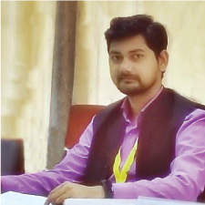

B.TECH IN
COMPUTER SCIENCE AND ENGINEERING
(INTERNET OF THINGS) (IoT)
(INTERNET OF THINGS) (IoT)

Noida Institute of Engineering and Technology, Greater Noida
| Duration | Intake | Department | Approvals |
|---|---|---|---|
| 4 years (8 Semesters) | 120 | ARM, PTC Thingworx, IBM Watson | AICTE |


To establish the department of IoT as a hub of excellence, producing highly competent, smart, ethical professionals and entrepreneurs to serve humanity.
Mr. Mayank Deep Khare, Assistant Professor & Head of Computer Science and Engineering (IoT) department at Noida Institute of Engineering & Technology, Greater Noida, has research interest in Internet of Things and Cloud Computing. He is pursuing Ph.D. in Computer Science from National Institute of Technology, Delhi. He has teaching experience of more than 6 years and one year of industry experience. He has published research papers in reputed journals & conferences. He developed Online PPT Monitoring system for maintaining teaching learning content through out the institute. He also developed several IoT enabled solutions for college campus like smart dustbins, Environmental monitoring setup etc. He is Innovation Ambassador and NISP Coordinator AICTE for promoting start-ups at institute.
Shrivastava, P.S., Malviya, U.K., Meshram, M. and Dewangan, U.S., 2022. Title: Efficiency of Ultra-Dense Multi-Tier Future Cellular Networks for 5G: A Survey. Wireless Personal Communications, 122(4), pp.3269-3291.
Singh, H., Kumar, V., Saxena, K. and Prasad, R., 2022. Title: A Smart Model for Prediction of Radio Wave Attenuation Due to Clouds and Fog (SMRWACF). Wireless Personal Communications, 122(4), pp.3227-3245.
Santosh Kumar, ERROR TRIMMING USING UNSYMMETRICAL TECHNIQUE IN AN TRANSMISION THROUGH IOT, Journal of Fundamental and Comparative Research, IF=7.268, Vol-9, ISSue-02, N0-17,2022.
Santosh Kumar, ASSIGNMENT OF UNIFORM WEIGHT ON PIXEL IN VISUAL CRYPTOGRAPHY USING TECHNIQUES OF IOT, INDUSTRIAL ENGINEERING JOURNAL, ISSN:0970-2555 VOLUME 52 ISSUE 1. NO 1,JANUARY 2023.
Jalali vatika, Voting System Through Blockchain Technology, International Conference on Emerging Technologies and Innovations, 01-02 March 2023, NIET Gr Noida.
Obaidullah Khan, Mujaffar Husain (2023) "IOT Based Smart Hydroponic Farming System" International Conference on Emerging Technologies and Innovations EmergIN-2023 01-02 March 2023, NIET Gr Noida.
Hemant Singh, Mujaffar Husain (2023) "Land Registry data maintance using block chain" International Conference on Emerging Technologies and Innovations EmergIN-2023 01-02 March 2023, NIET Gr Noida.
Sambhav Dev, MUJAFFAR HUSAIN (2023)"ChatGPT: An In-Depth Study of OpenAI's Large Language Model for Conversational AI" International Conference on Emerging Technologies and Innovations EmergIN-2023 01-02 March 2023, NIET Gr Noida.
Mujaffar Husain, Shivang Soni {2023} "A novel Model for Image recognition using Machine learning" International Conference on Emerging Technologies and Innovations EmergIN-2023 01-02 March 2023, NIET Gr Noida.
Neha Katiyar, Surbhi Sakshi, Priti Kumari, Jyoti Srivastava, "TRENDING IOT PLATFORMS MIDDLEWARE LAYER (2023). Intelligent Analytics for Industry 4.0 Applications (1st ed.). CRC Press. https://doi.org/10.1201/9781003321149.
Km Ikra , Salman Khursheed Ahmad. (2023). Analysis Of Person Re-Identification Process In Closed World Scenario Through Re-Ranking Method. Journal of Pharmaceutical Negative Results, 6972–6981. https://doi.org/10.47750/pnr.2022.13.S07.8.
Mayank Deep Khare, Prashant Pandey, Rajnish Kumar Rai, Ahmad MaazSustainable Smart Pot Retrofitting System International Conference on Emerging Technologies and Innovations EmergIN-2023 01-02 March 2023, NIET Gr Noida.
Mayank Deep Khare , Dilip Kumar , Chirag Singh, Priyanshi Trivedi "A Comparative Study on Data Deduplication Based on Cloud Computing Architecture" International Conference on Emerging Technologies and Innovations EmergIN-2023 01-02 March 2023, NIET Gr Noida.
Vanshika Rana, Vani, Abhishek Yadav, Mayank Deep Khare An Investigation on Backup and Restoring data Techniques in Cloud Data Centers International Conference on Emerging Technologies and Innovations EmergIN-2023 01-02 March 2023, NIET Gr Noida.
Prashant Kumar Singh , Amiy Krishna Gupta, Poorvi Gupta , Mayank Deep Khare A Survey on IoT based Hydroponic Farming International Conference on Emerging Technologies and Innovations EmergIN-2023 01-02 March 2023, NIET Gr Noida.
Club Name: Signodes CSE(IoT), School of computer science and Emerging Technologies, NIET, Greater Noida

--
--